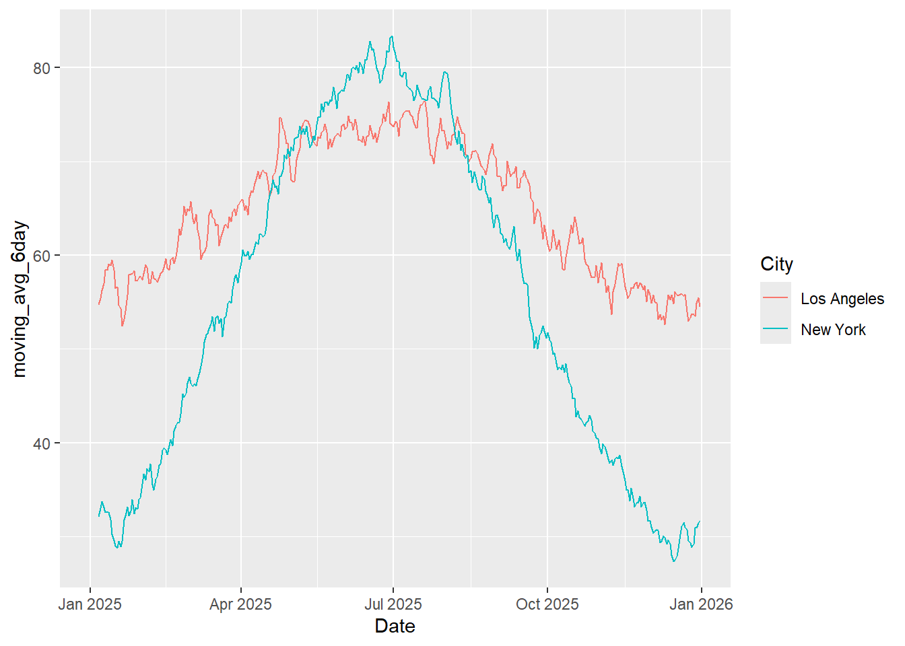

In this assignment, I will implement window functions in dplyr to calculate the year-to-date average and six-day moving average for each item. I will use temperature time-series data for New York City and Los Angeles to demonstrate how window functions can be applied to time-series data.
A window function performs a calculation across a set of related rows while keeping every original row in the dataset. Window functions allow you to calculate:
Running totals — such as the sum of values from the beginning up to the current row.
Moving averages — such as the average of the current row and the previous five rows.
Rankings — such as ranking values within a group.
Similar to an aggregate function using GROUP BY a window function performs calculations across multiple rows. However, unlike an aggregate function, a window function does not combine multiple rows into a single row. Instead, it keeps the original rows and adds the calculated result to each row.
Approach
I will use window functions in dplyr to calculate the year-to-date temperature average for New York City and Los Angeles. I will also calculate the six-day moving average for both cities and compare the results.
First, I will import my 2025 temperature time-series data into RStudio. Then, I will use dplyr window functions to calculate the year-to-date temperature averages and six-day moving averages for New York City and Los Angeles. Finally, I will compare the averages between the two cities to examine how their temperatures change over time.
Anticipated Challenges
One anticipated challenge is making sure the temperature data is correctly ordered by date before applying the window functions. If the dates are not in the correct order, the year-to-date and six-day moving averages may be calculated incorrectly.
Another challenge is handling missing temperature values. Missing data could affect the accuracy of the averages, especially for the six-day moving average ## Code
library(dplyr)
Attaching package: 'dplyr'
The following objects are masked from 'package:stats':
filter, lag
The following objects are masked from 'package:base':
intersect, setdiff, setequal, union
library(lubridate)
Attaching package: 'lubridate'
The following objects are masked from 'package:base':
date, intersect, setdiff, union
Date City Temperature_F
1 2025-01-01 New York 32.5
2 2025-01-02 New York 30.1
3 2025-01-03 New York 33.3
4 2025-01-04 New York 36.9
5 2025-01-05 New York 30.0
6 2025-01-06 New York 30.2
Date City Temperature_F
1 2025-01-01 Los Angeles 53.6
2 2025-01-02 Los Angeles 56.2
3 2025-01-03 Los Angeles 55.3
4 2025-01-04 Los Angeles 55.7
5 2025-01-05 Los Angeles 52.3
6 2025-01-06 Los Angeles 55.5
glimpse(ny_temperature_df)
Rows: 365
Columns: 3
$ Date <date> 2025-01-01, 2025-01-02, 2025-01-03, 2025-01-04, 2025-01…
$ City <chr> "New York", "New York", "New York", "New York", "New Yor…
$ Temperature_F <dbl> 32.5, 30.1, 33.3, 36.9, 30.0, 30.2, 37.5, 34.4, 29.6, 33…
since Date is of chr type so I have converted it into Date using lubridate library ### Calculate year to date average temperature of New York
# A tibble: 6 × 5
Date City Temperature_F year ytd_avg
<date> <chr> <dbl> <dbl> <dbl>
1 2025-01-01 New York 32.5 2025 32.5
2 2025-01-02 New York 30.1 2025 31.3
3 2025-01-03 New York 33.3 2025 32.0
4 2025-01-04 New York 36.9 2025 33.2
5 2025-01-05 New York 30 2025 32.6
6 2025-01-06 New York 30.2 2025 32.2
Calculate year to date average temperature of Los Angeles
# A tibble: 6 × 5
Date City Temperature_F year ytd_avg
<date> <chr> <dbl> <dbl> <dbl>
1 2025-01-01 Los Angeles 53.6 2025 53.6
2 2025-01-02 Los Angeles 56.2 2025 54.9
3 2025-01-03 Los Angeles 55.3 2025 55.0
4 2025-01-04 Los Angeles 55.7 2025 55.2
5 2025-01-05 Los Angeles 52.3 2025 54.6
6 2025-01-06 Los Angeles 55.5 2025 54.8
Date City Temperature_F moving_avg_6day
1 2025-01-01 New York 32.5 NA
2 2025-01-02 New York 30.1 NA
3 2025-01-03 New York 33.3 NA
4 2025-01-04 New York 36.9 NA
5 2025-01-05 New York 30.0 NA
6 2025-01-06 New York 30.2 32.16667
Date City Temperature_F moving_avg_6day
1 2025-01-01 Los Angeles 53.6 NA
2 2025-01-02 Los Angeles 56.2 NA
3 2025-01-03 Los Angeles 55.3 NA
4 2025-01-04 Los Angeles 55.7 NA
5 2025-01-05 Los Angeles 52.3 NA
6 2025-01-06 Los Angeles 55.5 54.76667
Warning: Removed 10 rows containing missing values or values outside the scale range
(`geom_line()`).

head(combine_df)
Date City Temperature_F moving_avg_6day
1 2025-01-01 New York 32.5 NA
2 2025-01-02 New York 30.1 NA
3 2025-01-03 New York 33.3 NA
4 2025-01-04 New York 36.9 NA
5 2025-01-05 New York 30.0 NA
6 2025-01-06 New York 30.2 32.16667
Conclusion
By using window functions such as cummean(), slide_dbl(), group_by(), and mutate(), I was able to calculate the year-to-date average temperature and six-day moving average temperature for New York City and Los Angeles.
From the analysis, Los Angeles was generally warmer than New York City during most of 2025. However, around July, New York City experienced higher temperatures than Los Angeles.